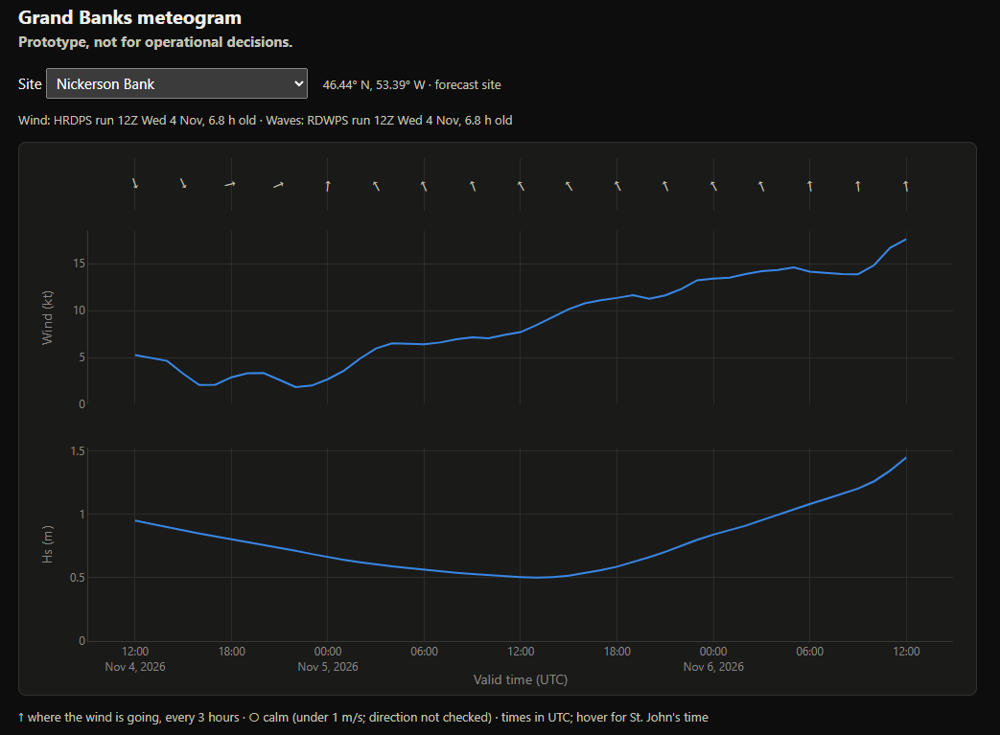

Grand Banks Weather Window Finder
Offshore work on the Grand Banks waits on the weather. This system collects Canada's wind and wave forecasts for offshore Newfoundland as they're published, and is starting to check them against real buoys. The end goal is to tell a crew when the next workable window opens, and how far to trust the forecast.
Running unattended on a small cloud server since Oct 28, 2026
How it works
Collect
Environment and Climate Change Canada (ECCC) announces each new forecast file. The system downloads it straight away: wind from the HRDPS model, waves from RDWPS.
Check
It tracks every run until all its files are in, and fetches any file the feed missed.
Extract
It pulls wind and waves out at each site, turning the model's winds from its tilted grid to true north.
Show
Values go into a database with their units, and a web page draws the forecast.
A first look at forecast accuracy
Each forecast compared with what buoy 44139 at Banquereau Bank measured at the same hour, grouped by how far ahead the forecast was made.
Wind speed, typical miss m/s
Grows from about 2 to 3 knots the further ahead the forecast looks, as expected.
Wave height, typical miss m
Stays near 0.2 m at every range. Why it doesn't grow is still an open question.
Height matters. The buoy's anemometer sits about 5 m above the sea, and the model's wind is at 10 m. Compared directly, the model looks 0.5 to 0.7 m/s too windy. Adjusted to the same height, that bias is about zero.
32 runs per model against 186 hourly buoy reports, Oct 28 to Nov 5. Nine days at one buoy is a small sample, so these are first observations, not statistics. "Typical miss" is the RMSE (root mean square error).
Problems it caught
A tilted grid
Canada's high-resolution model gives wind along its own grid, which is turned about 46° from true north out here. Every wind is rotated, then checked against ECCC's own direction field.
Worst gap so far: 1.2°Files that never arrive
The feed can drop announcements. The system knows every file a complete run should contain, and fetches missing ones by name.
73 of 73 runs per model completeTwo wave heights in one report
The buoy measures wave height two ways. NOAA's copy of its data keeps only the one wave models don't compute, which makes the wave forecast look worse than it is.
Adds about 0.08 m of apparent errorA label that says the opposite
A field in NOAA's wave model output is named "mean period" but holds the peak period. Confirmed in NOAA's own source code.
GFS-Wave, PERPW
What's next
- Add NOAA's GFS model and compare it with Canada's, through one table that maps each model's names and units.
- Score every model against both buoys automatically, every night.
- Open the same data in AWIPS, through Unidata's public server.
- Later: ensemble forecasts for the "how confident" part, then the window finder itself.
How it was built
Built with an AI coding assistant. I approved each piece before it was written, checked the raw data by hand, and can walk you through how it works.